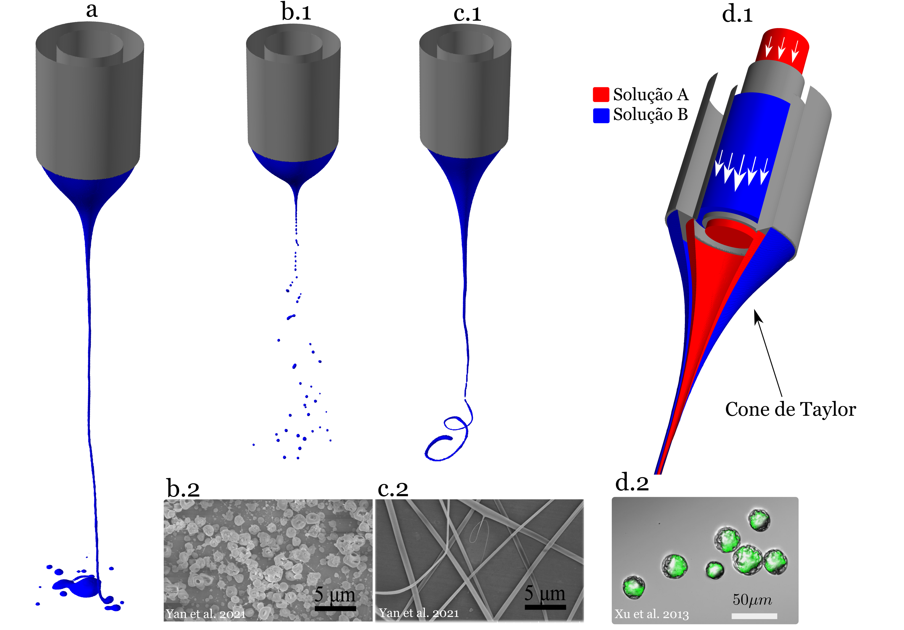

1. Introduction
Electrohydrodynamic (EHD) jets are created, in their simplest form, through a small nozzle from which a droplet of liquid with specific electrical properties emerges and is subjected to a high voltage. This voltage is applied between the nozzle and a collector, making it possible to form a thin jet due to electrostatic forces and, in some cases, gravitational forces. This phenomenon is commonly referred to as a “Taylor cone”. Taylor cones exhibit several operating modes, which are studied under different operating conditions. The most common mode consists of a continuous jet extending between the cone and the collector. However, depending on the conditions, these jets may break up into small droplets.
One application of Taylor cones is high-resolution, non-contact printing. These printing techniques, which use electrohydrodynamic jets, are known as e-jet printing. The use of polymers in microfabrication has also been investigated in this field. The impact of this approach is particularly advantageous because the droplets formed can be much smaller than the nozzle diameter. Therefore, when the nozzle is at the milli- or microscale, the droplets may reach dimensions on the nanoscale. It is precisely this ability to generate jets at such small scales that enables the high resolution achieved with e-jet printing.
1.1. Operating modes
Taylor cone-type EHD jets are a fascinating manifestation of the interaction between electrostatic forces and surface tension in conductive fluids. This phenomenon has been extensively studied because of its potential applications in fields such as inkjet printing, nanofibre production and drug delivery. The different operating modes of EHD jets under various experimental conditions are described below and can be observed in Figure 1.
- Dripping:
- Microdripping:
- Stable Taylor cone-jet:
- Spinning:
- Multi-jet:
A droplet grows at the end of the capillary until gravity causes it to fall. This mode can be observed in the lower central image. In this regime, the liquid hangs from the needle or capillary and forms a pendant droplet that eventually detaches due to gravity. The droplet grows to a certain size, after which surface tension can no longer support it, causing it to fall. The image clearly shows this breakup moment, labelled “Dripping breakup”.
Small droplets are periodically emitted from the apex of the cone due to the significant influence of electrostatic forces. In this regime, the electrostatic force contribution is still relatively small, and Taylor cone formation is periodic.
A cone forms at the end of the capillary, from which a continuous and stable jet is emitted. In the upper-right image, a continuous jet can be observed leaving the tip of the needle. Before jet emission, the liquid forms a Taylor cone at the needle tip. This characteristic conical shape develops when the liquid is subjected to a relatively strong electric field. The jet is emitted from the sharp apex of the cone and remains continuous and stable.
This mode could not be observed in our laboratory, but it is known that the solution is ejected tangentially from the cone surface through periodic waves. This mode commonly occurs when relatively viscous solutions or polymers are used.
This mode is not clearly visible in the image obtained at UBI, but it generally involves the emission of multiple thin jets from a liquid surface or the formation of several Taylor cones, as shown in the enlarged view. Under certain conditions, the liquid surface becomes unstable and gives rise to multiple jets.

1.3 Socioeconomic impact of electrohydrodynamic jets
The research and development of Taylor cone-based electrohydrodynamic (EHD) jets represents an innovative field with a wide range of social and economic implications. These systems use electrohydrodynamic principles to generate highly controlled fluid jets and have the potential to transform several industries and fields of application. This section explores the social, cultural, economic and environmental importance and impact of these jets.
EHD jets have shown promising applications in advanced manufacturing, enabling the precise and scalable production of materials such as fibres, thin films and micro- or nanoscale particles. This may transform industries including electronics, textiles and medical devices by improving the efficiency of production processes and reducing resource waste. Electrohydrodynamic printing provides a significantly higher resolution than conventional printing techniques such as inkjet printing. Whereas in traditional printing the diameter of the ejected material is of the same order of magnitude as the nozzle diameter, in EHD jets it can be substantially smaller. This resolution capability can reach typical diameters of approximately \( \sim 100 \) nm.
